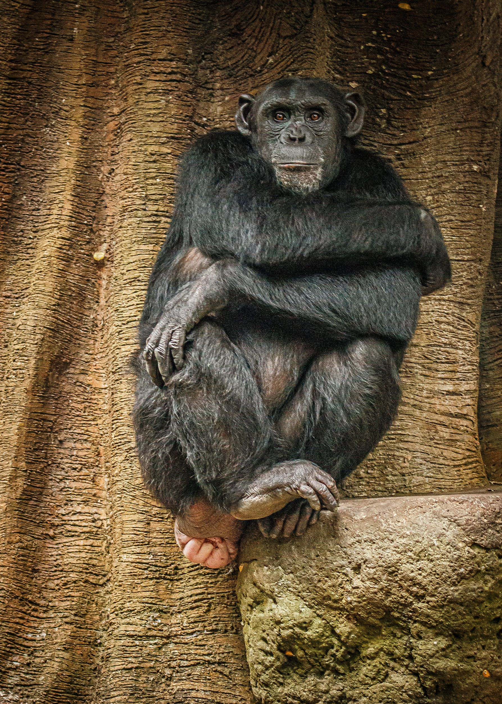

Pan troglodytes
Chimpancé
Pariente vivo del ser humano —compartimos cerca del 98 % del ADN—, habita los bosques tropicales de África central y occidental, usualmente cerca de ríos. Ingenioso y profundamente social, fabrica herramientas con ramas para atrapar termitas y convive en comunidades regidas por jerarquías complejas.
- HábitatBosques húmedos de África
- DietaFrutas, hojas e insectos
- ConservaciónEn peligro